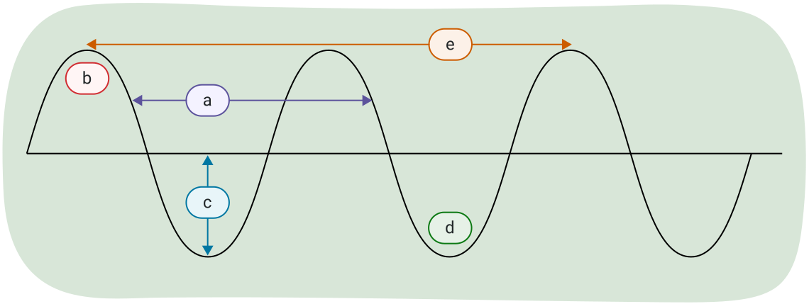

되돌아보기
새로운 주제를 탐구하고 배울 때, 잠시 멈추어 학습을 되돌아보는 것이 중요합니다. 이를 통해 기존 지식을 강화하고, 잘못된 이해를 바로잡고, 앞으로의 학습을 준비할 수 있습니다.
이 학습 활동의 목적은 파동에 대해 되돌아보고, 단원 1의 마지막에 있는 이 과정의 첫 번째 과제를 준비하는 것입니다.
노트
이것은 자기 평가로, 다음에 도움이 됩니다:
- 학습을 평가한다
- 현재 학습 위치를 파악하고, 어디로 나아가야 하며, 어떻게 도달할 수 있는지 결정한다
노트를 사용하여 다음 각 문제를 풀어 보세요. 풀이 예시와 비교하여 이해도를 확인하세요.

과제 1: 객관식 – 알아야 할 용어
설명에 가장 잘 맞는 용어를 선택하세요.
과제 2: 참/거짓 – 파동에 대해 얼마나 알고 있나요?
문장이 참인지 거짓인지 판별하세요.
과제 3: 무엇을 알고 있나요?
다음 문제를 풀어 보세요. 막히면 힌트를 확인하세요. 풀이 예시와 비교하여, 자신의 풀이가 정확하고 명확하며 완전한지 되돌아보세요.
- 280.0 Hz 부저가 파장이 1.21 m인 음파를 만들어 냅니다. 소리가 전달되는 공기의 온도는 얼마입니까?
- 진동수가 420 Hz인 소리굽쇠가 공기 중에서 파장 0.82 m의 소리를 냅니다. 공기의 온도가 올라가면 파장은 어떻게 되나요: 증가, 감소, 또는 변화 없음?
- 다음 각각의 진동수와 주기를 구하세요:
- 전구가 1초 동안 60번 켜졌다 꺼집니다.
- 벌새가 6초 동안 날개를 120번 칩니다.
- 직선 선로 위의 기차가 도로에 주차된 자동차 옆을 지나며 400.0 Hz의 경적을 울립니다. 기차는 20.0 m/s로 이동하고 있으며 온도는 10.0°C입니다. 기차가 다가올 때 자동차 안에 앉아 있는 사람이 듣는 겉보기 진동수를 구하세요.
과제 4: 파동에 이름 붙이기
파동에 표시된 각 문자에 대해, 적절한 이름이나 수치적 설명을 선택하여 연결하세요.


종합하기
노트
과제 5: 되돌아보기
노트에 다음 질문에 답하세요.
- 연습 문제의 풀이 예시를 검토한 후, 어떤 개념을 더 보완해야 하나요?
- 모든 개념을 이해하기 위한 다음 단계는 무엇인가요?
- 자기주도 학습자로서 당신의 강점은 무엇인가요? 집중하기 위해 어떤 노력을 했나요? 도움을 위해 어떤 자료를 참고했나요?
- 어떤 부분을 개선해야 하나요? 더 나은 학습자가 되기 위해 어떤 조치를 취할 수 있나요?
자기 점검 퀴즈
이해도를 확인하세요!
다음 자기 점검 퀴즈를 풀어 현재 학습 위치와 집중해야 할 영역을 파악하세요.
이 퀴즈는 피드백 전용이며 성적에 포함되지 않습니다. 이 퀴즈에 대한 시도 횟수는 무제한입니다. 충분한 시간을 가지고 최선을 다하며, 제공된 피드백을 되돌아보세요.
퀴즈 버튼을 눌러 도구에 접근하세요.